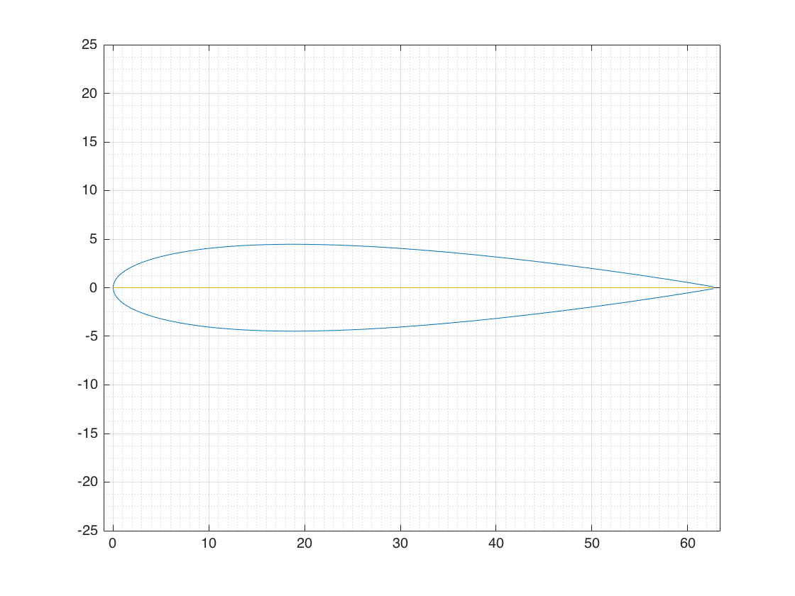
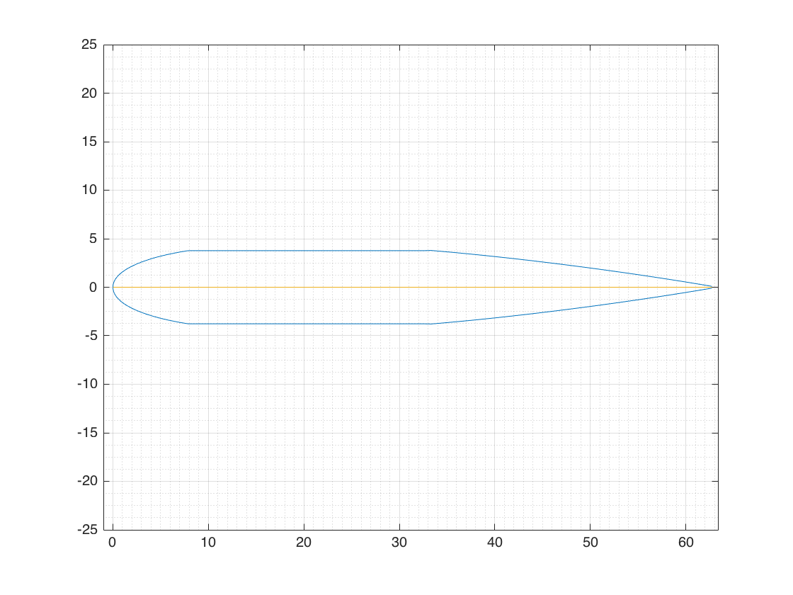
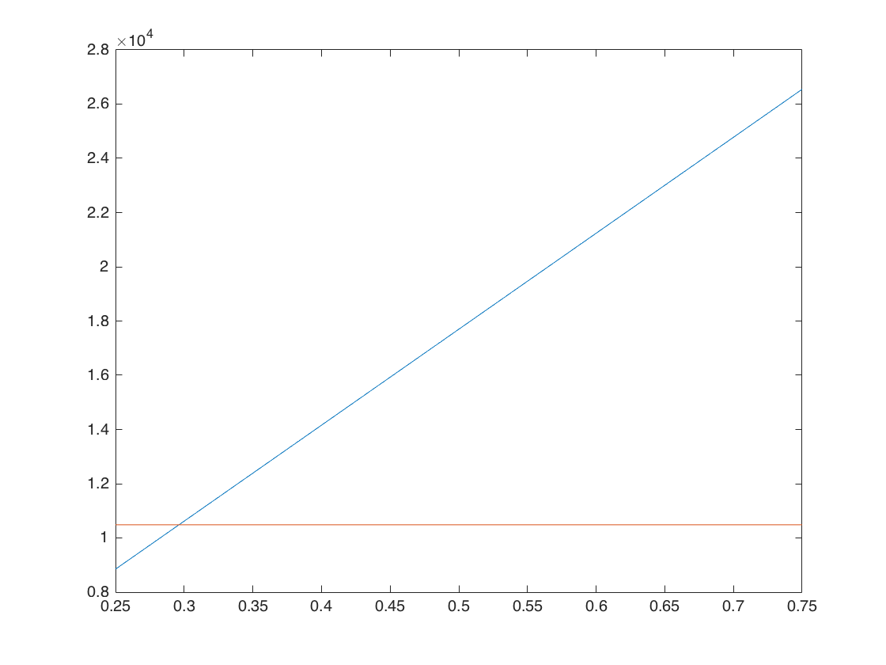
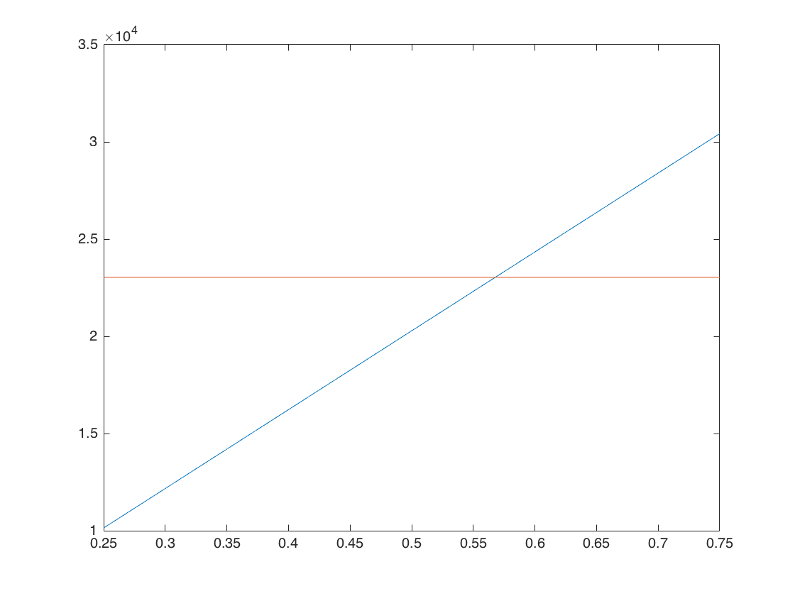
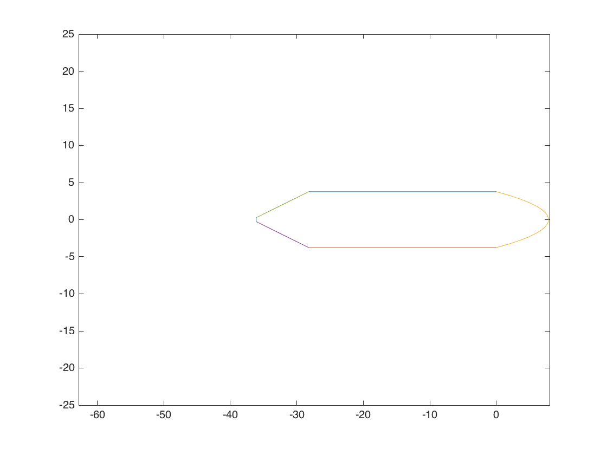

Homework Chapter 2
Theory
Group 2
Contents
- Parameters
- Import NACA 0012 profile
- Linearization
- Part 1 & 2
- Calculate height
- Calculate lengths
- Thickness Calculation
- Calculate length of the leading edge curvature
- Tappered Areas, Inertias and Centroids
- Area Calculation
- Section Definition
- First Moment of Area
- Centroid
- Second Moment of Area
- Moment of Inertia - Centroid
- Part 3 & 4
- Qyy Formulas
- Z Centroids Semi
- Qzz Formulas
- Y Centroids Semi
- Iyy Formulas
- Iyy Monocoque vs Semi
- Semimonocoque Modulus Weighted
Parameters
Beta = atand(0.1/0.45);
Import NACA 0012 profile
filename = 'user-000.csv'; delimiter = ','; startRow = 10; endRow = 210; formatSpec = '%f%f%[^\n\r]'; fileID = fopen(filename,'r'); dataArray = textscan(fileID, formatSpec, endRow-startRow+1, 'Delimiter',... delimiter, 'HeaderLines', startRow-1, 'ReturnOnError', false); fclose(fileID); xNACA0012 = dataArray{:, 1}/1.5939922481; yNACA0012 = dataArray{:, 2}/1.3429; clearvars filename delimiter startRow endRow formatSpec fileID dataArray ans; filename = 'user-000.csv'; delimiter = ','; startRow = 214; endRow = 314; formatSpec = '%f%f%[^\n\r]'; fileID = fopen(filename,'r'); dataArray = textscan(fileID, formatSpec, endRow-startRow+1, 'Delimiter',... delimiter, 'HeaderLines', startRow-1, 'ReturnOnError', false); fclose(fileID); xNACA0012_Camber = dataArray{:, 1}/1.5939922481; yNACA0012_Camber = dataArray{:, 2}; clearvars filename delimiter startRow endRow formatSpec ... fileID dataArray ans; filename = 'user-000.csv'; delimiter = ','; startRow = 318; formatSpec = '%f%f%[^\n\r]'; fileID = fopen(filename,'r'); dataArray = textscan(fileID, formatSpec, 'Delimiter', delimiter, ... 'HeaderLines' ,startRow-1, 'ReturnOnError', false); fclose(fileID); xNACA0012_Chord = dataArray{:, 1}/1.5939922481; yNACA0012_Chord = dataArray{:, 2}; clearvars filename delimiter startRow formatSpec fileID dataArray ans; graphOut =1; if graphOut == 1; figure('Name','NACA0012') plot(xNACA0012,yNACA0012,xNACA0012_Camber,yNACA0012_Camber,... xNACA0012_Chord,yNACA0012_Chord) grid on grid minor axis([-1 101/1.5939922481 -25 25]) end
Linearization
chord = max(xNACA0012_Chord); initLinear = (1.249440000000000e+01)/1.5939922481; endLinear = (5.313950000000000e+01)/1.5939922481; for ii = 1:numel(xNACA0012) if xNACA0012(ii) > initLinear & xNACA0012(ii) < endLinear if yNACA0012(ii) < 0 replacement = yNACA0012(find(xNACA0012 == initLinear)); yNACA0012(ii) = replacement(2); elseif yNACA0012(ii) > 0 replacement = yNACA0012(find(xNACA0012 == initLinear)); yNACA0012(ii) = replacement(1); end end end if graphOut == 1 figure('Name','NACA0012 - Simplified') plot(xNACA0012,yNACA0012,xNACA0012_Camber,yNACA0012_Camber,... xNACA0012_Chord,yNACA0012_Chord) grid on grid minor axis([-1 101/1.5939922481 -25 25]) end
Part 1 & 2
Calculate height
h = sum(abs(replacement));
Calculate lengths
b1 = 0.45*max(xNACA0012_Chord); b2 = b1; b4 = max(xNACA0012_Chord)*.25/cosd(Beta); b5 = b4; b6 = abs(h - 2*sind(Beta)*b4);
Thickness Calculation
t = h/4; t1 = 0.4*t; t2 = t1; t3 = t2; t4 = t3; t5 = t4; t6 = 0.6*t; t7 = t6;
Calculate length of the leading edge curvature
cX = xNACA0012(find(xNACA0012<=(chord*.125))); cY = yNACA0012(find(xNACA0012<=(chord*.125))); b3 = 0; for ii = 2:numel(cX) b3 = b3 + sqrt(((cX(ii)-cX(ii-1))^2)+((cY(ii)-cY(ii-1))^2)); end
Tappered Areas, Inertias and Centroids
[Izz4,Iyy4,z4,y4,A4] = TrapezoidInertia_Bottom(Beta,t1,t6,chord,h); [Izz5,Iyy5,z5,y5,A5] = TrapezoidInertia_Top(Beta,t5,t7,chord,h);
Area Calculation
A1 = b1*t1; A2 = b2*t2; A3 = b3*t3; A6 = b6*t6;
Section Definition
Section = [1:6]'; Modulus = [60,60,80,40,40,50]'.*10^6; % psi Eo = min(Modulus); ModRatio = Modulus./Eo; ActualArea = [A1,A2,A3,A4,A5,A6]'; TotalActualArea = sum(ActualArea); WeightArea = ModRatio.*ActualArea; TotalWeightArea = sum(WeightArea); disp(array2table([Section,Modulus,ModRatio,ActualArea,WeightArea],... 'VariableName',{'Section','Modulus_psi',... 'Modulus_ratio','ActualArea','WeightedArea'}))
Section Modulus_psi Modulus_ratio ActualArea WeightedArea
_______ ___________ _____________ __________ ____________
1 6e+07 1.5 21.252 31.879
2 6e+07 1.5 21.252 31.879
3 8e+07 2 13.816 27.632
4 4e+07 1 3.5106 3.5106
5 4e+07 1 3.5106 3.5106
6 5e+07 1.25 0.62944 0.7868
First Moment of Area
Centroid
%%%% y - Centroid y1 = (h/2) - (t1/2); y2 = (-h/2) + (t4/2); y3 = 0; y6 = 0; yCentroid = [y1,y2,y3,y4,y5,y6]'; %%%% z - Centroid z1 = -b1/2; z2 = -b2/2; z3 = (1/A3)*(.5*abs(trapz((cX.^2 - (cX-t3).^2)))); % Approximate the 4th % degree leading edge % as a parabola with % thickness. z6 = -((.70-.125)*chord)+t6; zCentroid = [z1,z2,z3,z4,z5,z6]'; %%%% First Moment of Area - z Qz1 = y1*A1; Qz2 = y2*A2; Qz3 = y3*A3; Qz4 = y4*A4; Qz5 = y5*A5; Qz6 = y6*A6; QzVec = [Qz1,Qz2,Qz3,Qz4,Qz5,Qz6]'; QzTotal = sum(QzVec); QzWeighted = QzVec.*ModRatio; QzTotalWeighted = sum(QzWeighted); fprintf('Qz = %7.4f [in^3]\n',QzTotal) fprintf('Qz_Weighted = %7.4f [in^3]\n',QzTotalWeighted) %%%% First Moment of Area - y Qy1 = z1*A1; Qy2 = z2*A2; Qy3 = z3*A3; Qy4 = z4*A4; Qy5 = z5*A5; Qy6 = z6*A6; QyVec = [Qy1,Qy2,Qy3,Qy4,Qy5,Qy6]'; QyTotal = sum(QyVec); QyWeighted = QyVec.*ModRatio; QyTotalWeighted = sum(QyWeighted); fprintf('Qy = %7.4f [in^3]\n',QyTotal) fprintf('Qy_Weighted = %7.4f [in^3]\n',QyTotalWeighted) disp(array2table([Section,ModRatio,ActualArea,WeightArea,zCentroid,... yCentroid,QzVec,QyVec,QzWeighted,QyWeighted],... 'VariableName',{'Section','Modulus_ratio','ActualArea',... 'WeightedArea','Centroid_z','Centroid_y','Qz','Qy',... 'Qz_Weighted','Qy_Weighted'})) zCentroid = QyTotal/TotalActualArea; yCentroid = QzTotal/TotalActualArea; zCentroidWeight = QyTotalWeighted/TotalWeightArea; yCentroidWeight = QzTotalWeighted/TotalWeightArea; fprintf('z Centroid = %6.4f [in]\ny Centroid = %6.4f [in]\n',zCentroid,yCentroid) fprintf('Modulus Weighted z Centroid = %6.4f [in] \nModulus Weighted y Centroid = %6.4f [in] \n',zCentroidWeight,yCentroidWeight)
Qz = 0.0000 [in^3]
Qz_Weighted = 0.0000 [in^3]
Qy = -762.3027 [in^3]
Qy_Weighted = -988.6585 [in^3]
Section Modulus_ratio ActualArea WeightedArea Centroid_z Centroid_y Qz Qy Qz_Weighted Qy_Weighted
_______ _____________ __________ ____________ __________ __________ _______ _______ ___________ ___________
1 1.5 21.252 31.879 -14.116 3.3876 71.995 -299.99 107.99 -449.98
2 1.5 21.252 31.879 -14.116 -3.3876 -71.995 -299.99 -107.99 -449.98
3 2 13.816 27.632 5.7275 0 0 79.131 0 158.26
4 1 3.5106 3.5106 -31.257 -3.5122 -12.33 -109.73 -12.33 -109.73
5 1 3.5106 3.5106 -31.257 3.5122 12.33 -109.73 12.33 -109.73
6 1.25 0.62944 0.7868 -34.944 0 0 -21.995 0 -27.494
z Centroid = -11.9163 [in]
y Centroid = 0.0000 [in]
Modulus Weighted z Centroid = -9.9666 [in]
Modulus Weighted y Centroid = 0.0000 [in]
Second Moment of Area
The second moment of area, or moment of inercia, is calculated in the following sections about the reference axis. The parallel axis theorem is applied in order to find the total moment of inertia with respect to the centroid of the section.
%%%%% z - Geometrical - About Reference Axis Izz1 = (((b1)*(t1^3))/12)+((y1^2)*A1); Izz2 = (((b2)*(t4^3))/12)+((y2^2)*A2); Izz3 = (((4/15)*(h/2)^3)*(0.125*chord))+((y3^2)*A3); Izz4 = Izz4+((y4^2)*A4); Izz5 = Izz5+((y5^2)*A5); Izz6 = (((t6)*(b6^3))/12)+((y6^2)*A6); Izz = [Izz1; Izz2; Izz3; Izz4; Izz5; Izz6]; IzzTotal = sum(Izz); %%%%% y - Geometrical - About Reference Axis Iyy1 = (((b1^3)*(t1))/12)+((z1^2)*A1); Iyy2 = (((b2^3)*(t4))/12)+((z2^2)*A2); Iyy3 = (((16/175)*(h/2))*(0.125*chord)^3)+((z3^2)*A3); Iyy4 = Iyy4+((z4^2)*A4); Iyy5 = Iyy5+((z5^2)*A5); Iyy6 = (((t6^3)*(b6))/12)+((z6^2)*A6); Iyy = [Iyy1; Iyy2; Iyy3; Iyy4; Iyy5; Iyy6]; IyyTotal = sum(Iyy); %%%%% x - Weighted - About Reference Axis Izz1_weighted = ModRatio(1)*(((b1)*(t1^3))/12)+((y1^2)*WeightArea(1)); Izz2_weighted = ModRatio(2)*(((b2)*(t4^3))/12)+((y2^2)*WeightArea(2)); Izz3_weighted = ModRatio(3)*(((4/15)*(h/2)^3)*(0.125*chord))+((y3^2)*WeightArea(3)); Izz4_weighted = ModRatio(4)*Izz4+((y4^2)*WeightArea(4)); Izz5_weighted = ModRatio(5)*Izz5+((y5^2)*WeightArea(5)); Izz6_weighted = ModRatio(6)*(((t6)*(b6^3))/12)+((y6^2)*WeightArea(6)); Izz_weighted = [Izz1_weighted; Izz2_weighted; Izz3_weighted; Izz4_weighted; Izz5_weighted; Izz6_weighted]; IzzTotal_weighted = sum(Izz_weighted); %%%%% y - Weighted - About Reference Axis Iyy1_weighted = ModRatio(1)*(((b1^3)*(t1))/12)+((z1^2)*WeightArea(1)); Iyy2_weighted = ModRatio(2)*(((b2^3)*(t4))/12)+((z2^2)*WeightArea(2)); Iyy3_weighted = ModRatio(3)*(((16/175)*(h/2))*(0.125*chord)^3)+((z3^2)*WeightArea(3)); Iyy4_weighted = ModRatio(4)*Iyy4+((z4^2)*WeightArea(4)); Iyy5_weighted = ModRatio(5)*Iyy5+((z5^2)*WeightArea(5)); Iyy6_weighted = ModRatio(6)*(((t6^3)*(b6))/12)+((z6^2)*WeightArea(6)); Iyy_weighted = [Iyy1_weighted; Iyy2_weighted; Iyy3_weighted; Iyy4_weighted; Iyy5_weighted; Iyy6_weighted]; IyyTotal_weighted = sum(Iyy_weighted); %%%%% Inertia Tables disp(array2table([Section,ModRatio,ActualArea,WeightArea,... Izz,Iyy,Izz_weighted,Iyy_weighted],... 'VariableName',{'Section','Modulus_ratio','ActualArea',... 'WeightedArea','Izz','Iyy',... 'Izz_Weighted','Iyy_Weighted'})) fprintf('Total: \nIzz = %10.4f [in^4]\nIyy = %10.4f [in^4]\nIzz* = %10.4f [in^4]\nIyy* = %10.4f [in^4]\n',IzzTotal,IyyTotal,IzzTotal_weighted,IyyTotal_weighted)
Section Modulus_ratio ActualArea WeightedArea Izz Iyy Izz_Weighted Iyy_Weighted
_______ _____________ __________ ____________ ________ ______ ____________ ____________
1 1.5 21.252 31.879 244.9 5646 367.34 8469
2 1.5 21.252 31.879 244.9 5646 367.34 8469
3 2 13.816 27.632 111.52 619.19 223.04 1238.4
4 1 3.5106 3.5106 43.41 3444.5 86.715 6874.3
5 1 3.5106 3.5106 43.41 3444.5 86.715 6874.3
6 1.25 0.62944 0.7868 0.016298 768.65 0.020373 960.82
Total:
Izz = 688.1449 [in^4]
Iyy = 19568.7179 [in^4]
Izz* = 1131.1731 [in^4]
Iyy* = 32885.8225 [in^4]
Moment of Inertia - Centroid
IzzTotalCentroid = IzzTotal - (yCentroid^2)*TotalActualArea;
IyyTotalCentroid = IyyTotal - (zCentroid^2)*TotalActualArea;
IzzTotal_weightedCentroid = IzzTotal_weighted - (yCentroidWeight^2)*TotalWeightArea;
IyyTotal_weightedCentroid = IyyTotal_weighted - (zCentroidWeight^2)*TotalWeightArea;
fprintf('Total: \nIzz = %10.4f [in^4]\nIyy = %10.4f [in^4]\nIzz* = %10.4f [in^4]\nIyy* = %10.4f [in^4]\n',IzzTotalCentroid,IyyTotalCentroid,IzzTotal_weightedCentroid,IyyTotal_weightedCentroid)
Total: Izz = 688.1449 [in^4] Iyy = 10484.8802 [in^4] Izz* = 1131.1731 [in^4] Iyy* = 23032.2472 [in^4]
Part 3 & 4
Parametric Equations
s1 = linspace(0,b1,100); s2 = linspace(0,b2,100); s3 = linspace(0,b3,100); s4 = linspace(0,b4,100); s5 = linspace(0,b5,100); s6 = linspace(0,b6,100); param1z = @(s) -(0.45*chord).*((s-b1)./(0-b1)); param2z = @(s) -(0.45*chord).*((s-b2)./(0-b1)); param3z = @(s) (0.125*chord).*(((s-0).*(s-b3))./(((b3/2)-0).*((b3/2)-b3))); param4z = @(s) -((0.70-0.125)*chord).*((s-b4)./(0-b4)) - (0.45*chord).*((s-0)./(b4-0)); param5z = @(s) -((0.70-0.125)*chord).*((s-b5)./(0-b5)) - (0.45*chord).*((s-0)./(b5-0)); param6z = @(s) -((0.70-0.125)*chord).*((s-b6)./(0-b6))-((0.70-0.125)*chord).*((s-0)./(b6-0)); param1y = @(s) (h/2).*((s-b1)./(0-b1))+(h/2).*((s-0)./(b1-0)); param2y = @(s) -(h/2).*((s-b2)./(0-b2))-(h/2).*((s-0)/(b2-0)); param3y = @(s) (h/2).*(((s-(b3/2)).*(s-b3))./((0-(b3/2)).*(0-b3)))-(h/2).*(((s-0).*(s-(b3/2)))./((b3-0).*(b3-(b3/2)))); param4y = @(s) -(b6/2).*((s-b4)./(0-b4))-(h/2).*((s-0)./(b4-0)); param5y = @(s) (b6/2).*((s-b5)./(0-b5))+(h/2).*((s-0)./(b5-0)); param6y = @(s) -(b6/2).*((s-b6)./(0-b6))+(b6/2).*((s-0)./(b6-0));
Assuming a constant thickness around the skin
sTotal = b1+b2+b3+b4+b5+b6; SkinArea = @(t) t*sTotal; As1 = @(t) SkinArea(t)/5; As2 = As1; As3 = As2; As4 = As3; As6 = @(t) SkinArea(t)/10; As7 = As6; ThinArea = @(t) SkinArea(t) + As1(t) + As2(t) + As3(t) + As4(t) + As6(t) + As7(t);
Qyy Formulas
Qyy1s = @(t) integral(@(s)(param1z(s)).*t,0,b1); Qyy2s = @(t) integral(@(s)(param2z(s)).*t,0,b2); Qyy3s = @(t) integral(@(s)(param3z(s)).*t,0,b3); Qyy4s = @(t) integral(@(s)(param4z(s)).*t,0,b4); Qyy5s = @(t) integral(@(s)(param5z(s)).*t,0,b5); Qyy6s = @(t) integral(@(s)(param6z(s)).*t,0,b6); Qyys = @(t) Qyy1s(t)+Qyy2s(t)+Qyy3s(t)+Qyy4s(t)+Qyy5s(t)+Qyy6s(t);
Z Centroids Semi
tVar = linspace(.25,.75,10000); zCs = zeros(1,numel(tVar)); for ii = 1:numel(tVar) zCs(ii) = Qyys(tVar(ii))/ThinArea(tVar(ii)); end
Qzz Formulas
Qzz1s = @(t) integral(@(s)(param1y(s)).*t,0,b1); Qzz2s = @(t) integral(@(s)(param2y(s)).*t,0,b2); Qzz3s = @(t) integral(@(s)(param3y(s)).*t,0,b3); Qzz4s = @(t) integral(@(s)(param4y(s)).*t,0,b4); Qzz5s = @(t) integral(@(s)(param5y(s)).*t,0,b5); Qzz6s = @(t) integral(@(s)(param6y(s)).*t,0,b6); Qzzs = @(t) Qzz1s(t)+Qzz2s(t)+Qzz3s(t)+Qzz4s(t)+Qzz5s(t)+Qzz6s(t);
Y Centroids Semi
tVar = linspace(.25,.75,10000); yCs = zeros(1,numel(tVar)); for ii = 1:numel(tVar) yCs(ii) = Qzzs(tVar(ii))/ThinArea(tVar(ii)); end
Iyy Formulas
Iyy1s = @(t) integral(@(s)(param1z(s).^2).*t,0,b1); Iyy2s = @(t) integral(@(s)(param2z(s).^2).*t,0,b2); Iyy3s = @(t) integral(@(s)(param3z(s).^2).*t,0,b3); Iyy4s = @(t) integral(@(s)(param4z(s).^2).*t,0,b4); Iyy5s = @(t) integral(@(s)(param5z(s).^2).*t,0,b5); Iyy6s = @(t) integral(@(s)(param6z(s).^2).*t,0,b6); Iyys = @(t) Iyy1s(t)+Iyy2s(t)+Iyy3s(t)+Iyy4s(t)+Iyy5s(t)+Iyy6s(t);
Izz1s = @(t) integral(@(s)(param1y(s).^2).*t,0,b1); Izz2s = @(t) integral(@(s)(param2y(s).^2).*t,0,b2); Izz3s = @(t) integral(@(s)(param3y(s).^2).*t,0,b3); Izz4s = @(t) integral(@(s)(param4y(s).^2).*t,0,b4); Izz5s = @(t) integral(@(s)(param5y(s).^2).*t,0,b5); Izz6s = @(t) integral(@(s)(param6y(s).^2).*t,0,b6); Izzs = @(t) Izz1s(t)+Izz2s(t)+Izz3s(t)+Izz4s(t)+Izz5s(t)+Izz6s(t);
Iyy Monocoque vs Semi
tVar = linspace(.25,.75,10000); IyysVar = zeros(1,numel(tVar)); IzzsVar = zeros(1,numel(tVar)); tol = 1; for ii = 1:numel(tVar) IyysVar(ii) = Iyys(tVar(ii))-((zCs(ii)^2)*ThinArea(tVar(ii))); IzzsVar(ii) = Izzs(tVar(ii))-((yCs(ii)^2)*ThinArea(tVar(ii))); if abs(IyysVar(ii) - IyyTotalCentroid) <= tol tThin = tVar(ii); disp(ii) fprintf('\nSemimonocoque Thickness: %12.4f [in]\n',tThin) fprintf('Semimonocoque Iyy: %12.4f [in^4]\n',IyysVar(ii)) fprintf('Semimonocoque Izz: %12.4f [in^4]\n',IzzsVar(ii)) fprintf('Semimonocoque z_c: %12.4f\n',zCs(ii)) fprintf('Semimonocoque y_c: %12.4f\n',yCs(ii)) fprintf('Semimonocoque Qyy: %12.4f [in^3]\n',Qyys(tVar(ii))) fprintf('Semimonocoque Qzz: %12.4f [in^3]\n',Qzzs(tVar(ii))) end end
925 Semimonocoque Thickness: 0.2962 [in] Semimonocoque Iyy: 10484.4103 [in^4] Semimonocoque Izz: 311.1485 [in^4] Semimonocoque z_c: -8.1591 Semimonocoque y_c: 0.0000 Semimonocoque Qyy: -519.6284 [in^3] Semimonocoque Qzz: 0.0000 [in^3]
Semimonocoque Modulus Weighted
sTotal = sum([b1,b2,b3,b4,b5,b6]'.*ModRatio); SkinArea = @(t) t*sTotal; As1M = @(t) SkinArea(t)/5; As2M = As1; As3M = As2; As4M = As3; As6M = @(t) SkinArea(t)/10; As7M = As6; ThinArea = @(t) SkinArea(t) + As1(t) + As2(t) + As3(t) + As4(t) + As6(t) + As7(t); tVar = linspace(.25,.75,10000); IyysVarM = zeros(1,numel(tVar)); IzzsVarM = zeros(1,numel(tVar)); tol = 1; IyysM = @(t) sum([Iyy1s(t),Iyy2s(t),Iyy3s(t),Iyy4s(t),Iyy5s(t),Iyy6s(t)]'.*ModRatio); IzzsM = @(t) sum([Izz1s(t),Izz2s(t),Izz3s(t),Izz4s(t),Izz5s(t),Izz6s(t)]'.*ModRatio); QzzsM = @(t) sum([Qzz1s(t),Qzz2s(t),Qzz3s(t),Qzz4s(t),Qzz5s(t),Qzz6s(t)]'.*ModRatio); QyysM = @(t) sum([Qyy1s(t),Qyy2s(t),Qyy3s(t),Qyy4s(t),Qyy5s(t),Qyy6s(t)]'.*ModRatio); tVar = linspace(.25,.75,10000); zCsM = zeros(1,numel(tVar)); yCsM = zeros(1,numel(tVar)); for ii = 1:numel(tVar) zCsM(ii) = QyysM(tVar(ii))/ThinArea(tVar(ii)); yCsM(ii) = QzzsM(tVar(ii))/ThinArea(tVar(ii)); end for ii = 1:numel(tVar) IyysVarM(ii) = IyysM(tVar(ii))-((zCs(ii)^2)*ThinArea(tVar(ii))); IzzsVarM(ii) = IzzsM(tVar(ii))-((yCs(ii)^2)*ThinArea(tVar(ii))); if abs(IyysVarM(ii) - IyyTotal_weightedCentroid) <= tol tThinM = tVar(ii); disp(ii) fprintf('\nSemimonocoque Modulus Weighted Thickness: %12.4f [in]\n',tThinM) fprintf('Semimonocoque Modulus Weighted Iyy: %12.4f [in^4]\n',IyysVarM(ii)) fprintf('Semimonocoque Modulus Weighted Izz: %12.4f [in^4]\n',IzzsVarM(ii)) fprintf('Semimonocoque Modulus Weighted z_c: %12.4f\n',zCsM(ii)) fprintf('Semimonocoque Modulus Weighted y_c: %12.4f\n',yCsM(ii)) fprintf('Semimonocoque Modulus Weighted Qyy: %12.4f [in^3]\n',QyysM(tVar(ii))) fprintf('Semimonocoque Modulus Weighted Qzz: %12.4f [in^3]\n',QzzsM(tVar(ii))) end end IyyMono = ones(1,numel(tVar)).*IyyTotalCentroid; figure plot(tVar,IyysVar); hold on plot(tVar,IyyMono) hold off IyyMonoM = ones(1,numel(tVar)).*IyyTotal_weightedCentroid; figure plot(tVar,IyysVarM); hold on plot(tVar,IyyMonoM) hold off
6355 Semimonocoque Modulus Weighted Thickness: 0.5677 [in] Semimonocoque Modulus Weighted Iyy: 23032.1093 [in^4] Semimonocoque Modulus Weighted Izz: 872.6600 [in^4] Semimonocoque Modulus Weighted z_c: -7.8777 Semimonocoque Modulus Weighted y_c: 0.0000 Semimonocoque Modulus Weighted Qyy: -1170.5854 [in^3] Semimonocoque Modulus Weighted Qzz: 0.0000 [in^3] 
figure plot(param1z(s1),param1y(s1)); hold on plot(param2z(s2),param2y(s2)); hold on plot(param3z(s3),param3y(s3)); hold on plot(param4z(s4),param4y(s4)); hold on plot(param5z(s5),param5y(s5)); hold on plot(param6z(s6),param6y(s6)) axis([-chord 8 -25 25])